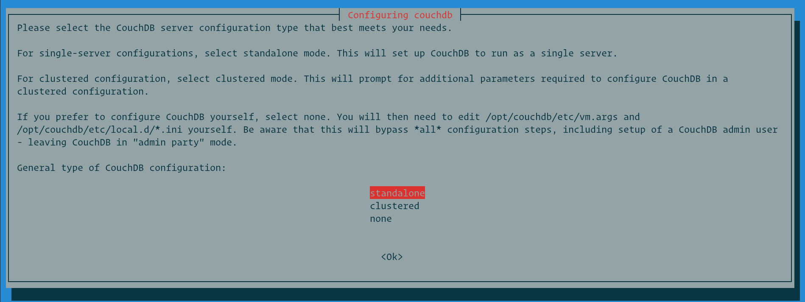
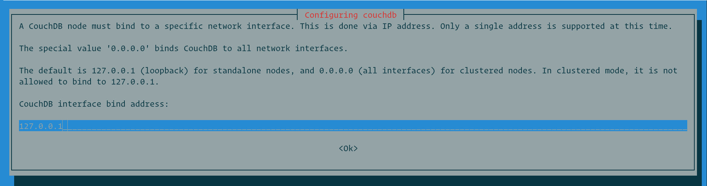
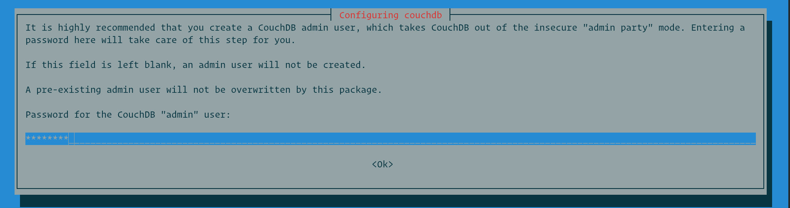
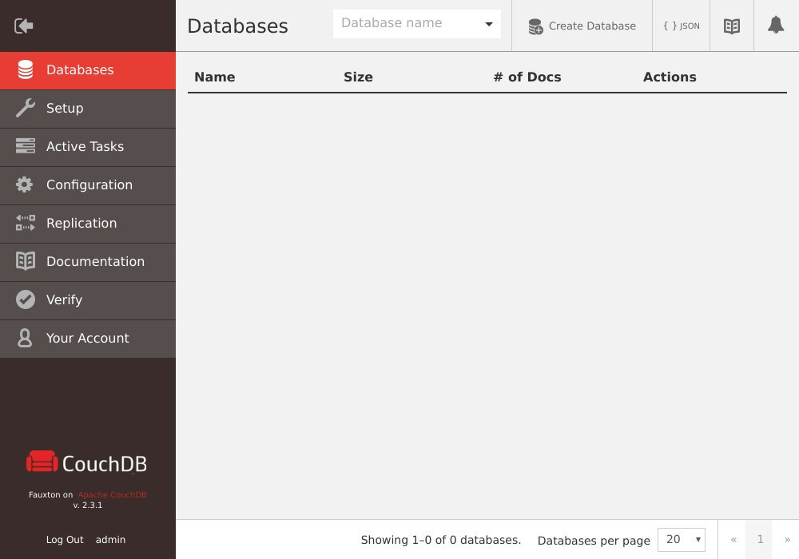

如何在 Debian 9 上安装 CouchDB
CouchDB 是 Apache Software Foundation 维护的开源容错和自由模式的 NoSQL 数据库。
CouchDB 服务器将其数据存储在包含具有 JSON 结构的文档的命名数据库中。每个文档都可以包含许多字段和附件。字段可以包括文本，数字，列表，布尔值等。它可以通过 RESTful HTTP/JSON API 访问，允许您读取，创建，编辑和删除数据库文档。
在本教程中，我们将解释如何在 Debian 9 上安装最新版本的 CouchDB 。
先决条件
为了能够在 Debian 系统上安装软件包，您必须以具有 sudo 权限的用户身份登录。
启用 CouchDB 存储库
CouchDB .deb 软件包可从其官方存储库中获得。要启用 CouchDB 存储库并导入 GPG 密钥，请运行以下命令：
echo "deb https://apache.bintray.com/couchdb-deb bionic main" | sudo tee -a /etc/apt/sources.listcurl -L https://couchdb.apache.org/repo/bintray-pubkey.asc | sudo apt-key add -在 Denian 上安装 CouchDB
启用存储库后，更新包列表并安装 CouchDB ：
sudo apt update
sudo apt install couchdb安装程序将首先询问您是要在独立模式还是群集模式下安装 CouchDB 。我们将在单服务器独立模式下安装 CouchDB 。

接下来，您将可以选择设置 CouchDB 将绑定到的网络接口的 IP 地址。对于单服务器设置，请保留默认值 127.0.0.0 。如果要配置群集，请输入网络接口的 IP 地址或输入 0.0.0.0 让 CouchDB 绑定到所有网络接口。

在下一个提示中设置管理员密码。强烈建议设置密码，使 CouchDB 退出不安全的管理模式（CouchDB 称这种方式为 “Admin Party”，任何人都有有管理员权限，可以为所欲为的做任何事情）。如果将此字段留空，则不会创建管理员用户。

确认密码， CouchDB 安装将继续。
验证 CouchDB 安装
要验证安装，请运行以下 curl 命令，该命令将以 JSON 格式打印 CouchDB 数据库信息：
curl http://127.0.0.1:5984/输出如下所示：
{
"couchdb":"Welcome",
"version":"2.3.1",
"git_sha":"c298091a4",
"uuid":"370903b5400643c2979838f5b68348c1",
"features":[
"pluggable-storage-engines",
"scheduler"
],
"vendor":{
"name":"The Apache Software Foundation"
}
}为清楚起见，输出已格式化。
如果您更喜欢 GUI ，则可以访问 CouchDB 基于 Web 的界面， Fauxton ：
http://127.0.0.1:5984/_utils/
结论
您已经学习了如何在 Debian 9 安装 CouchDB。 下一步可能是访问 Apache CouchDB 文档并查找有关此主题的更多信息。